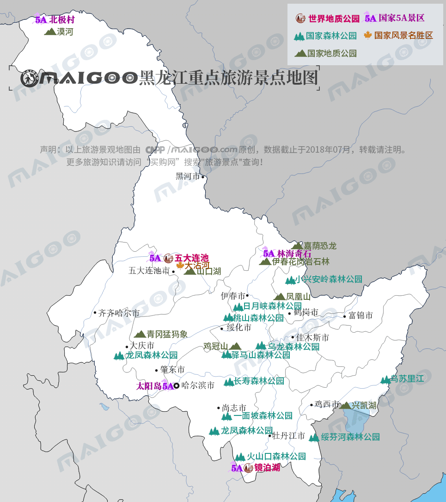

| | | | | |
| - | - | - | - | - |
|<b>别名</b>|龙江||<b>著名景点</b>|太阳岛、北极村、中央大街、五大连池、扎龙湿地、镜泊湖等|
|<b>行政区类别</b>|省||<b>机 场</b>|哈尔滨太平国际机场、齐齐哈尔三家子机场、牡丹江海浪国际机场等|
|<b>所属地区</b>|东北地区||<b>火车站</b>|哈尔滨站、哈尔滨西站、齐齐哈尔站、牡丹江站、佳木斯站等|
|<b>下辖地区</b>|12个地级市、1个地区||<b>车牌代码</b>|黑A-黑R|
|<b>电话区号</b>|0451-0459；0466-0469||<b>GDP</b>|16199.9亿元（2017年）|
|<b>邮政区码</b>|150000-160000||<b>人均GDP</b>|42758元|
|<b>地理位置</b>|东北||-|-|
|<b>面 积</b>|47.3万平方千米||-|-|
|<b>人 口</b>|3788.7万（2017年常住总人口）||-|-|
|<b>方 言</b>|-||-|-|
|<b>气候条件</b>|温带大陆性季风气候||-|-|
| <b>黑龙江生活文化</b> | <b>黑龙江特色文化</b> | <b>黑龙江曲艺文化</b> | <b>黑龙江建筑文化</b> | <b>黑龙江宗教文化</b> |
| - | - | - | - | - |
| <a href="javascript:;" onclick="live(this);">习俗/民俗</a> | <a href="javascript:;" onclick="feature(this);">黑龙江冰雕艺术</a> | <a href="javascript:;" onclick="art(this);">东北二人转</a> | <a href="javascript:;" onclick="building(this);">黑龙江建筑风格</a> | <a href="javascript:;" onclick="religion(this);">宗教/庙宇</a> |
| <a href="javascript:;" onclick="live(this);">方言文化</a> | <a href="javascript:;" onclick="feature(this);">东北秧歌</a> | <a href="javascript:;" onclick="art(this);">东北大鼓</a> | - | - |
| <a href="javascript:;" onclick="live(this);">节日文化</a> | <a href="javascript:;" onclick="feature(this);">方正剪纸</a> | <a href="javascript:;" onclick="art(this);">龙江剧</a> | - | - |
| <a href="javascript:;" onclick="live(this);">嫁娶文化</a> | <a href="javascript:;" onclick="feature(this);">桦树皮制作技艺</a> | - |-|-|
| <a href="javascript:;" onclick="live(this);">饮食文化</a> | <a href="javascript:;" onclick="feature(this);">兰西挂钱</a> | -|-|-|
| - | <a href="javascript:;" onclick="feature(this);">黑龙江非物质文化遗产</a> | -|-|-|
## <i class="fa fa-file-text-o"></i>&nbsp;目录（Table of Contents）
+ [I. 总路线图（参考"广东"）](guangdong.html)
+ [II. 景点](#two)
+ [III. 路线规划（参考"广东"）](guangdong.html)
<h2 id="two"><i class="fa fa-star-o"></i>&nbsp;景点</h2>
